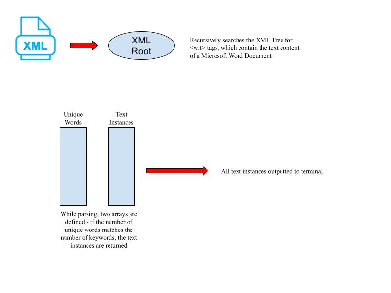

Parsing Script
This Python script allows a user to automate the process of searching for a command line specified number of keyword across multiple .docx files. When run, the user is prompted with a simple Graphical User Interface (GUI) that contains a search bar, asking for the keywords to search for.
The complexity of this software can be increased moving forward with various options: one such idea at the moment involves taking multiple .docx files with a unified format, and aggregating a bunch of data from them into one unified spot (for instance, pulling all the responses from various interviews). Additionally, extending the functionality from solely .docx files to PDF files as well.
Check out the following useful links!